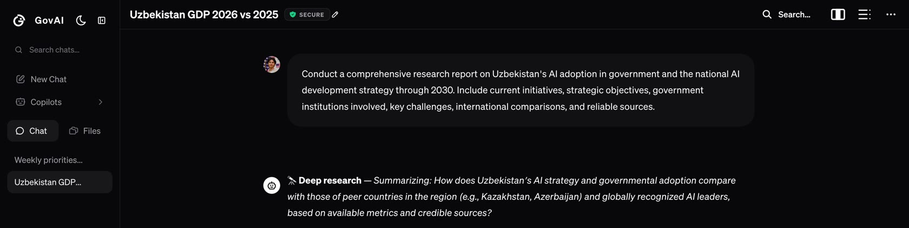

GovAI · Founded 2026 Sovereign AI infrastructure for government.
LLMs, agents, and templates for the Uzbekistan government — run entirely on local infrastructure, built to end bureaucracy.
See the product How it works
The problem
Government work still runs on manual labor
Data leaves the country
Sensitive government data flows out through foreign AI providers with every prompt.
No tools for employees
Public servants have no AI tooling built for how their work actually happens.
The same manual work
Drafting, reports, Word & Excel — done by hand, every day, across every office.
The impact
of time saved per employee
work quality boost in the office suite
public servants — the addressable workforce
The solution
We build secure AI infrastructure for government.
We build secure LLMs with templates and agents that give every government employee back their time. GovAI handles the sheets, emails, writing, files, and research behind daily government work — generating the first draft so staff only need to review and approve it.
The product
ChatGPT, but for Government.
-
Integrated with government portals
Connected directly with Ijro.uz and existing workflows.
-
Automated workspace
AI agents handle recurring tasks across the office suite.
-
AI specialists per sector
Purpose-built specialists for each government sector.
-
Secure & sovereign
Encrypted chats, run on sovereign infrastructure end to end.
-
GovAI Web & Research
Built-in web access and deep research, kept in-country.
The market
The market for sovereign AI software
CAGR growth of the sovereign AI market
of sovereign AI infrastructure is software
Governmental AI adaptation
What we're already seeing on the ground
public servants surveyed in the initial pilot
want to use AI in their work, according to the survey
believe AI can help with translation, drafting documents, or research
Why sovereign
Foreign Big Tech vs. GovAI
| OpenAI, Microsoft, Google | GovAI |
|---|---|
| Rents foreign-controlled infrastructure | Full ownership of the product |
| Extra pay for privacy (data residency) | Runs on local government servers & infrastructure |
| Models are still locked | Full control over models & underlying systems |
Team
Built by people who ship.
Abdulaziz Muydinjonov
Developer
Asqar Arslonov
Founder of GovAI
FAQ
Questions, answered.
No. GovAI runs entirely on local government servers and infrastructure — no data ever leaves the country.
No. GovAI drafts and prepares the work — every output is still reviewed and approved by staff before it's used.
GovAI is built specifically for government workflows — integrated with portals like Ijro.uz, with sector-specific AI specialists and full sovereign control over the models and infrastructure.